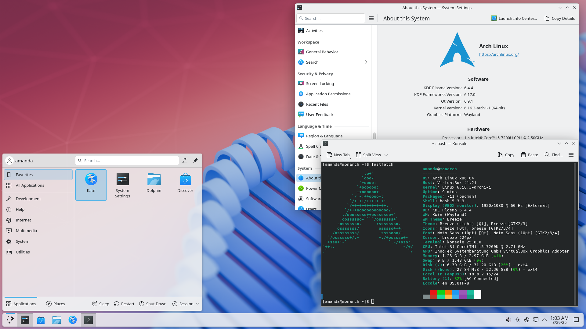

Arch Linux

Arch Linux is a lightweight, do-it-yourself distro built for users who want total control over their system. You install only what you need, configure everything yourself, and end up with a lean, fully personalized OS. The famous Arch Wiki is the best Linux documentation on the internet.
Desktop Environment
User's choice
Package Manager
pacman / AUR
Latest Release
Rolling (no versioning)
Init System
systemd
Support Cycle
Rolling
Architecture
x86_64
Key Features
- Build your system from scratch, only install what you actually need
- AUR (Arch User Repository) with 80,000+ community packages
- Arch Wiki, the most comprehensive Linux documentation available
- Rolling release means your system is always up-to-date
- pacman package manager is fast and straightforward
- Minimal base footprint, runs on older low-spec hardware